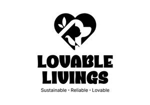

Trade Mark Journal No.2025/022 30 May 2025
UK00004203437 14 May 2025 (5,21,28)

- Class 5
- Underpads for incontinents; Disposable liners for incontinence diapers; Disposable pads for incontinence; Disposable diapers for incontinence; Incontinence diapers; Diapers for incontinence; Incontinence pads; Pants, absorbent, for incontinence; Absorbent diapers of paper for pets; Absorbent diapers of cellulose for pets; Disposable absorbent pads for lining pet crates; Disposable absorbent mats for lining pet crates; Disposable pet diapers; Disposable nappies; Disposable housebreaking pads for pets; Disposable napkins of cellulose for babies; Diaper liners; Disposable baby diapers; Infants' disposable diapers of cellulose; Infants' diapers [disposable] of cellulose; Absorbent cotton; Absorbent cotton wadding; Cloth diapers; Disposable diapers of cellulose for incontinents; Disposable babies' diapers of paper and cellulose; Disposable nappies made of cellulose for infants; Disposable adult diapers; Nappy changing mats, disposable, for babies; Sanitary pads; Babies' napkins [diapers]; Diapers [babies' napkins]; Babies' diapers [napkins]; Napkins (Babies' -) [diapers]; Disposable nappies made of cellulose for babies; Disposable nappies made of paper for infants; Babies' disposable diaper pants of cellulose; Absorbent sanitary articles; Disposable diapers of paper for incontinents; Disposable swim diapers for babies; Swim diapers, disposable, for babies; Nappies as baby diapers; Paper diapers for infants; Infants' disposable diapers of paper; Infants' diapers [disposable] of paper; Disposable nappies made of paper for babies; Disposable napkins of paper for babies; Disposable sanitizing wipes; Babies' disposable diaper pants of paper; Disposable training pants [diapers]; Paper diapers for babies; Paper diapers; Diapers for pets; Protective liners for panties; Swim diapers, reusable, for babies; Panty liners [sanitary]; Sanitary panty liners; Disposable sanitising wipes; Swim nappies, disposable, for babies; Triangular-shaped diapers [paper] for babies; Nappies of cellulose for babies; Disposable napkins made of paper for infants; Diapers for babies; Disposable babies' napkins of cellulose; Belts for sanitary napkins [towels]; Sanitary tampons; Tampons [sanitary].
- Class 21
- Neoprene zippered bottle holders; Plastic water bottles [empty]; Reusable bottles; Aluminum water bottles, empty; Bottles; Reusable plastic water bottles sold empty; Water bottles for bicycles; Reusable stainless steel water bottles; Reusable stainless steel water bottles sold empty; Glass bottles; Vacuum bottles [insulated flasks]; Water bottles sold empty; Bottle brushes; Perfume bottles; Non-electric bottle openers; Glass mugs; Mug racks; Bottle stands.
- Class 28
- Tennis balls; Tennis ball throwing machines; Tennis ball throwing apparatus; Table tennis balls; Soft tennis balls; Tennis ball serving machines; Balls for playing platform tennis.
Darsana das